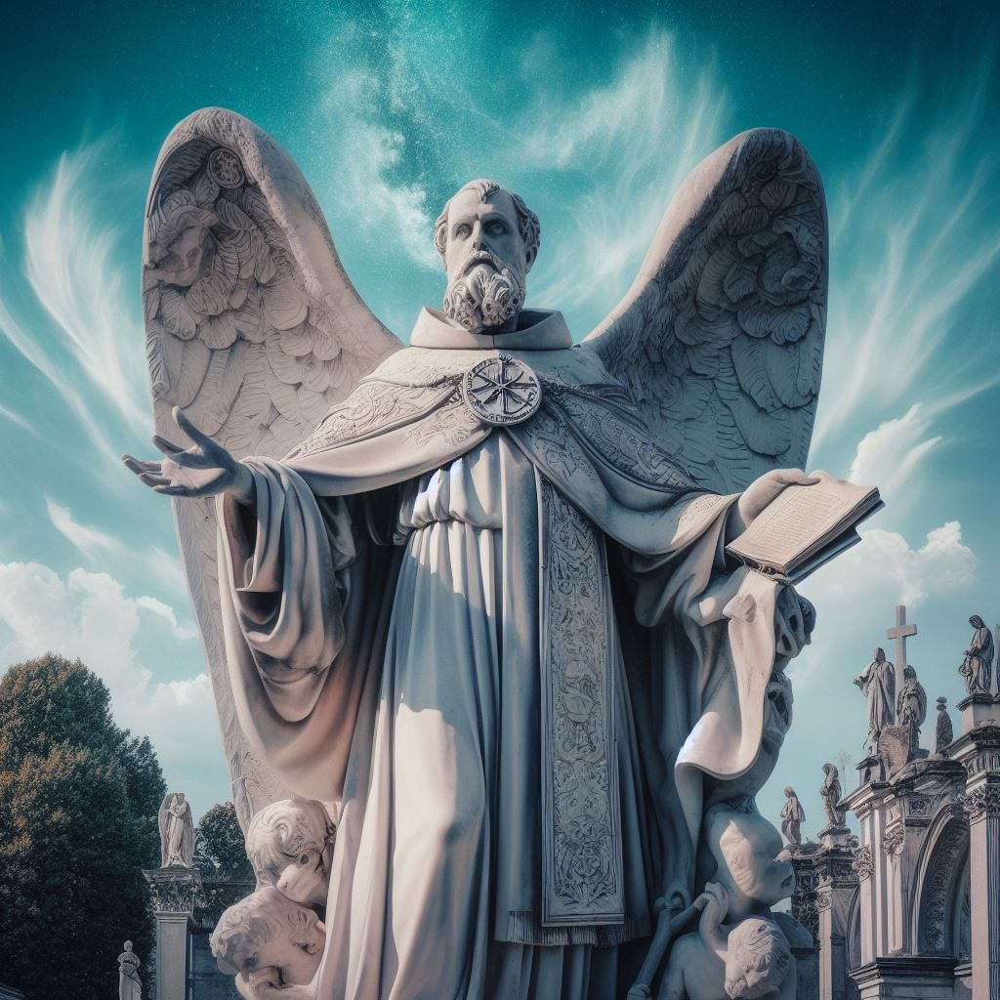

“Arriveu al cementeri de la regió de Niledor, per a evitar enfermetats, els habitants de Niledor acordaren guardar tots els cadavers en el mateix lloc i li encargaren al monje Zambil els cuidats mortuoris. Pero desde fa uns mesos, es diu que qui ve asi desapareix, les autoritats han intentat posarse en contacte amb el monje, inclús han avistat a l’esglesia de la deesa de la resurrecció Lezkiar, pero per ara no hi ha agut cap resposta.”
“Veieu una bruma que viatja per el sospitós cementeri, fa un intens olor a incens. Lo que mes vos llama l’atenció es que no hi ha ningú, ni tan sols es sent el cantar de les aus. Es pot dir que hi ha un silenci sepulcral.”
Si avansen.
“Conforme avanseu entre les tombes, veieu una estatua que s’alsa al final del cementeri. Es una imatge d’una especie de monjo.”
Quan están prop de la estatua
“Sentiu una risa espectral que recorre tot el cementeri com el escalfret que recorre tot el vostre cos. L’estatua estalla en mil trosos, lliberant una figura que es troba flotant en el aire. La placa de l’estatua cau als vostres peus, aquesta resa: “In memoriam Zambil”. L’aspecte cadaveric i gris del esser contrasta amb les vestimentes morades de monjo que du.”
Zambil:“Per fi ha acabat el ritual, ara la mort ja no es un enemic, es un aliat. Lezkiar soc el teu adalid, jo duré al resurrecció que tant hem estat predicant a aquest món.”
“Zambil repara en la vostra presencia.”
Zambil: “Ah, carn fresca, nous aliats per al meu exercit. Alseuse germans i disfruteu del banquet.”
“De repent un terratremol sacudix i obri les tombes, d’aquestes s’alsen els morts, zombies i esquelets armats es dirigixen a vosaltres.”
Invoca 1 Monjo Zambiel, 3 zombies y 3 esqueletos. Si duen un NPC +2 per cada NPC a lo que vuiga el master (zombie o esqueleto).
Quan derroten a Zambil
“Derroteu a Zambil, del seu cos comensen a ixir raigs de llum del seu cos, amb un chillit d’ultratomba es desfa en un montó de cenisa. Vegeu un diari entre les seues sendres.”
Si lligen el diari:
Entrada 1:
“Desde que he arrivat a aquesta regió no he dixat de sentir la llegenda del home esvait. Qui era
aquest home? I perqué el seu castell te una barrera mágica tan poderosa que ni la meua mágia es
capaç de atravesarla? No tinc respostes a aquestes preguntes de moment, lo únic que sé es que hi ha
algo dintre d’ixe castell que em crida.”
Entrada 8:
“He estat pensant en la mort. Cada volta que oficie un soterrament ho pense. Els humans som, de
lluny, les criatures que menys vivim de tot el món de Zudkaos. Per qué la nostra senyora Lezkiar
ens otorgá tan poc de temps de vida. [...] He estat investigant sobre la barrera mágica, per lo vist un
grup de desafortunats aventurers la va conseguir atravesar amb un tipus de mágia celestial d’un
cléric. Per el que tinc entés les pedres de permatrago son capases de aunl·lar aquesta barrera. He
comprat dues. Aquesta nit creuaré la barrera i descobriré tots els misteris d’aquest home esvait.""
Entrada 13:
"Vaig conseguir sortir malferit, aquell lloc es una trampa mortal, pero si puc dir algo ben segur es
que l’home esvait era un geni de la mágia, vaig trobar al seu laboratori uns escrits del seu puny i
lletra. Parla de com evitar la mort. Avui provaré el ritual, he de estar soterrat viu, tinc por, pero em
fa mes por la idea de abandonar aquest mon. Lezkiar, pronte tindré el teu poder de la inmortalitat.
Ningú més tindrá que morir. L’era dels humans com a les criatures mes longeves comensa ara."
Si van a per la misió de la rosa negra
"Veieu que damunt de algunes tombes creix una rosa de petals negres. Recolliu una i l'afegiu al vostre inventari."
Si seguixen avant arriven a la zona de precastell